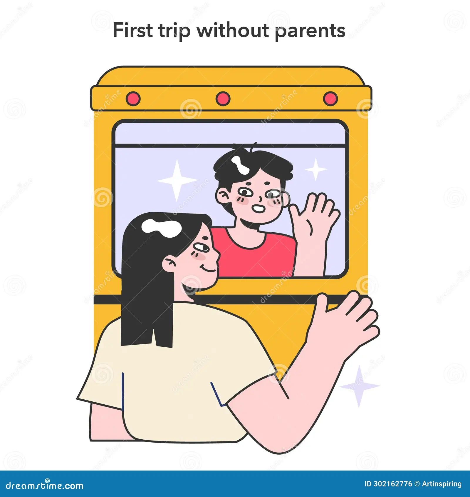
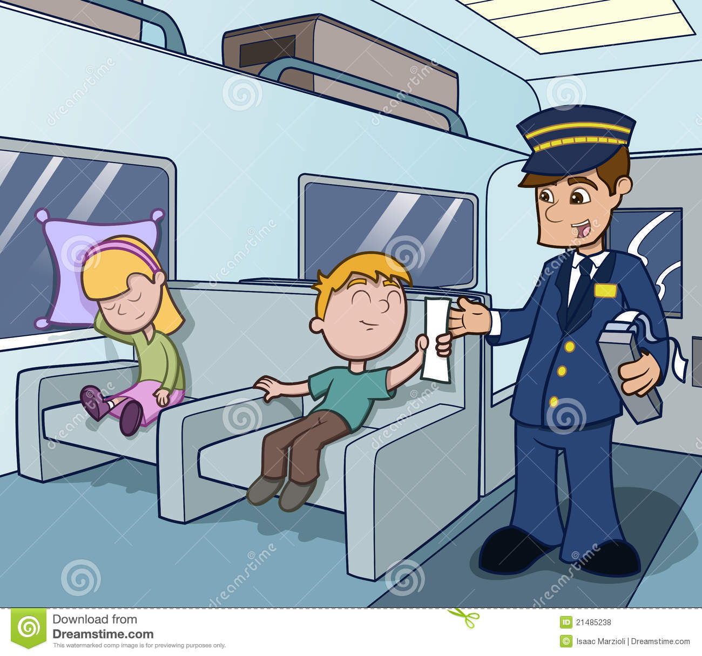

Once up on a time, there was a couple living in a city, and they were blessed with a boy named John.
John was a little boy who studied in a nearby school.
Every school holydays, his father would take him to his grandparent's house, which was in the village.
They traveled by train, and they always enjoyed the journey.
There were many people sitting arround them on the train, and john felt very happy at that time.
He was sitting near the window, enjoying the natural scenery.
At that time he heared a sound "vaddai,bajji,samosa and thattai vangalaya".
John called out to his father and said, "Daddy i want samosa".His father bought him a samosa, and John was very happy.
The grand parent house was in the village.
After about half an hour, they reached the village and gotoff the train.
John's grandfather and grand mother were waiting at the train station. When john saw his grandparent's he was very happy and ran to his garadpa. His grandpa hugged him and kiss him on the forehead. It was a wonderful moment. Then they went to the house. John's grandpa was a former. He had hens, ducks, goat and cows. John's siblings were also in the village, so he had a friends to play with. They spent one month in the village, and after that, they returned to the city, and John went back to school. Likewise Every year they traveled to the village by train.For 10 years, they had travelled in train. So train journey had become easy for Jhon.
Now John was 11year old. He had grown up well. This year, however, his father told to him, "John i have an important work in the offfice, so this year we can't go to your grandparent's village". John was very upset because he loved his grandparents so much. He really wanted to go to their house. John told hid dad,"No problem, Dad I will manage. Now i am 11 yearSs old and I can travel alone by train. Please allow me to go alone". But his daddy didn't agree. John kept asking his dad again and again, until finally, his father allowed him to go to the village by train alone.
It was day of travel. John woke up early in the morning, got ready, and headed to the railway station. His father and mother came to see him off. Before he left, his father gave him a piece of paper and said, "if you feel scared, read this papper". John put the paper in his bag, said goodbye to his parents, and sat down on the train.
After 10 minutes some people asked him,"why are you traveling alone?". John replied "i am a big boy, so I am going to my grandpa's house alone". After some time, a ticket checker came and asked him the same question. John gave the same answer, but he began to feel a little scared. At that moment, he remembered the papper his father had gave him. So he took the papper out of his bag and read it. when he read the papper he was surprised and felt strong in his mind because his father had written, "John you don't have to worry. I am in the last compartment of the train. We didn't go home, we came with you on the train". John was so happy. He forgot his fear and felt good about the journey. That year, he also enjoyed his time at his grandparent's house.
In this story, John traveled alone by train. When he felt fear, he read the papper his father had given him. It reminded him that was not truly alone. His father's love and care were with him the entire time. Likewise, our Heavenly father also loves and cares for us all. To show His love, He send his only Son, Jesus, into the world. God never leaves us alone, even in difficult times in life, because Jesus said, "I am with you always,even to the end of the world".
"Teaching them to observe all things whatsoever i have commanded you: and, lo, i am with you alway,even unto the end of the World
Matthew 28:20"